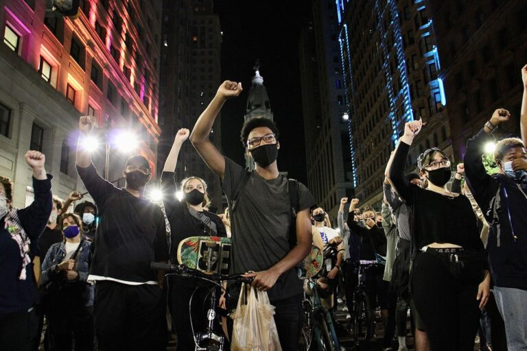

Documenting Surveillance
25 September 2020

Image Credit: Emma Lee/WHYY
If you were out walking in Old City on Thursday night, you probably heard the deafening sound of four police helicopters circling the air above you, or sirens wailing as dozens of armored police vans and buses sped down Locust Street. You may have passed the blocks and blocks of bike cops stationed throughout Center City. You may even have been accosted by a white man in American flag shorts on Market Street, and warned of an impending riot.
On my way to protest the lack of justice for the murder of Breonna Taylor, I also spotted three unmarked surveillance vans with Accelerated Media Technologies logos, as well as a Verizon truck with a police escort. The vans all had satellite dishes, sensors, and on-board power supplies. Inside the vans, I observed men watching footage of a woman walking on the street.
Accelerated Media Technologies offers a "completely self-sufficient mobile power, surveillance and communications network...as well as control and surveillance of up to 100 remote Thermal and Optical Trailer nodes." As a surveillance researcher, it makes me question the depth and breadth of surveillance technology being employed by the City of Philadelphia, or perhaps by the federal government with the City's permission, without public consent.
Black, Brown, and Indigenous activists have been and still are the targets of wide-spread surveillance and police intimidation. New technology like aerial drones, Ring doorbells, stingrays, and social media data mining have only deepened the ways in which police gather and exploit information about activists. Combined with the increase in digital activity and surveillance due to the pandemic, the expanding threat of technology-driven oppression is both undeniable and alarming. The City of Philadelphia deployed all of the police presence and surveillance technology described above for around 150 peaceful demonstrators.
Constituents of Philadelphia must let our elected representatives know that we will not tolerate the unconstitutional dragnet surveillance afforded by these people in unmarked vans. Such indiscriminate monitoring not only violates our right to a reasonable expectation of privacy, but also serves as a serious deterrent to peaceful assembly and, more broadly, to life in general. Whether you are protesting state-sponsored murder or simply out walking your dog, it is your right to exist without the heavily-armored helicopters of a fascist police state hovering above you. While technologists and activists alike continue to work on this issue, we can protect ourselves by practicing digital safety at protests.